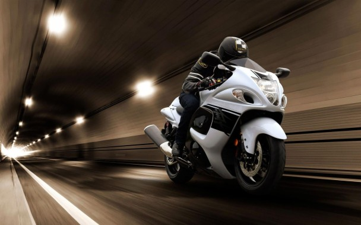

The Suzuki GSX1300R Hayabusa is a sport bike motorcycle made by Suzuki since 1999. It immediately won acclaim as the world's fastest production motorcycle, with a top speed of 303 to 312 km/h.
Ex-Showroom Price: ₹13.7 lakhs - ₹16.5 lakhs
Conclude date: March 2020
Max speed: 299 to 312 km/h
Fuel economy: 15 to 17.8 km/l
Curb weight: 266 to 268 kg
Manufacturer: Suzuki
Assembly: Japan: Toyokawa, Aichi (Toyokawa plant); India: Gurgaon (Gurgaon plant)